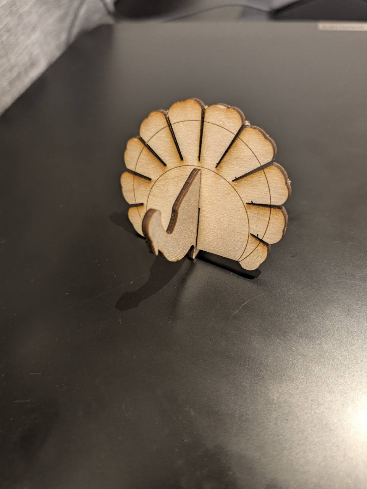

Laser-Cut Gallery
Browse visible starting points before opening files or changing dimensions.
A dedicated visual gallery of reusable laser-cut shapes, organizers, stands, joints, French-cleat modules, calibration tools and themed starters.
← General materials · Laser-cutting files and tools
General materials · Visual gallery
Start with the picture. Browse organizer parts, stands, joints, French-cleat modules, calibration tools and themed shapes. Then open the reusable SVG and adapt it to the real material and object.
Project files
Photos and files


232 reusable visuals
Choose by shape and purpose
These are editable starting points, not verified finished products. Measure the real object and sheet material, then make a small test cut before a complete build.
Filters 0
Filters narrow the current gallery. Shortcut buttons above start a fresh view.
No designs match this combination. Try clearing a filter.